Last updated: 2026-09-07
Checks: 6 1
Knit directory: BreastCancerEpigenetics/
This reproducible R Markdown analysis was created with workflowr (version 1.7.1). The Checks tab describes the reproducibility checks that were applied when the results were created. The Past versions tab lists the development history.
The R Markdown file has unstaged changes. To know which version of
the R Markdown file created these results, you’ll want to first commit
it to the Git repo. If you’re still working on the analysis, you can
ignore this warning. When you’re finished, you can run
wflow_publish to commit the R Markdown file and build the
HTML.
Great job! The global environment was empty. Objects defined in the global environment can affect the analysis in your R Markdown file in unknown ways. For reproduciblity it’s best to always run the code in an empty environment.
The command set.seed(20240919) was run prior to running
the code in the R Markdown file. Setting a seed ensures that any results
that rely on randomness, e.g. subsampling or permutations, are
reproducible.
Great job! Recording the operating system, R version, and package versions is critical for reproducibility.
Nice! There were no cached chunks for this analysis, so you can be confident that you successfully produced the results during this run.
Great job! Using relative paths to the files within your workflowr project makes it easier to run your code on other machines.
Great! You are using Git for version control. Tracking code development and connecting the code version to the results is critical for reproducibility.
The results in this page were generated with repository version a4a09e2. See the Past versions tab to see a history of the changes made to the R Markdown and HTML files.
Note that you need to be careful to ensure that all relevant files for
the analysis have been committed to Git prior to generating the results
(you can use wflow_publish or
wflow_git_commit). workflowr only checks the R Markdown
file, but you know if there are other scripts or data files that it
depends on. Below is the status of the Git repository when the results
were generated:
Ignored files:
Ignored: analysis/patient_complete_sequencing_profiles.png
Ignored: analysis/peaks_venn_diagram.png
Unstaged changes:
Modified: analysis/clinic_data_analysis.Rmd
Note that any generated files, e.g. HTML, png, CSS, etc., are not included in this status report because it is ok for generated content to have uncommitted changes.
These are the previous versions of the repository in which changes were
made to the R Markdown (analysis/clinic_data_analysis.Rmd)
and HTML (docs/clinic_data_analysis.html) files. If you’ve
configured a remote Git repository (see ?wflow_git_remote),
click on the hyperlinks in the table below to view the files as they
were in that past version.
| File | Version | Author | Date | Message |
|---|---|---|---|---|
| Rmd | a4a09e2 | han | 2026-09-07 | 9/7/2026 |
| html | a4a09e2 | han | 2026-09-07 | 9/7/2026 |
| Rmd | 9997afb | han | 2026-08-27 | 8/27/2026 |
| html | 9997afb | han | 2026-08-27 | 8/27/2026 |
| Rmd | 35c1ec4 | han | 2026-08-13 | 8/13/2026 |
| html | 35c1ec4 | han | 2026-08-13 | 8/13/2026 |
rm(list=ls())
library(rprojroot)
root <- rprojroot::find_rstudio_root_file()
library(dplyr)
library(purrr)
library(tidyr)
library(DT)library(readxl)
#clinic_data=read_excel(file.path(root, "..\\fasting_project\\INT FASTING PATIENT DATA.xlsx"))
#clinic_data
#clinic_data_cleaned=read.csv(file.path(root, "..\\fasting_project\\INT FASTING PATIENT DATA (1)_clean.csv"), header=T)
clinic_data=read_xlsx(file.path(root, "..\\fasting_project\\INT FASTING Clinical Data VJIN.xlsx"))library(dplyr)
library(tidyr)
# 1. Map pre/post matching column names
pre_cols <- grep("_pre(_study?$", colnames(clinic_data_cleaned), value = TRUE, ignore.case = TRUE)
post_cols <- grep("_post_study$", colnames(clinic_data_cleaned), value = TRUE, ignore.case = TRUE)
paired_vars <- data.frame(pre = pre_cols, stringsAsFactors = FALSE) %>%
mutate(base_name = gsub("_pre(_study)?$", "", pre, ignore.case = TRUE)) %>%
inner_join(
data.frame(post = post_cols, stringsAsFactors = FALSE) %>%
mutate(base_name = gsub("_post_study$", "", post, ignore.case = TRUE)),
by = "base_name"
)
# 2. Run paired t-tests using base R lapply()
results_list <- lapply(1:nrow(paired_vars), function(i) {
pre_var <- paired_vars$pre[i]
post_var <- paired_vars$post[i]
label <- paired_vars$base_name[i]
# Ensure numeric data and drop incomplete pairs
df_subset <- clinic_data_cleaned %>%
dplyr::select(all_of(c(pre_var, post_var))) %>%
mutate(across(everything(), as.numeric)) %>%
drop_na()
x_pre <- df_subset[[pre_var]]
x_post <- df_subset[[post_var]]
# Run paired t-test if enough complete pairs exist
if (length(x_pre) > 2) {
test <- t.test(x_post, x_pre, paired = TRUE)
data.frame(
Biomarker = label,
N_Pairs = length(x_pre),
Mean_Pre = round(mean(x_pre), 3),
Mean_Post = round(mean(x_post), 3),
Mean_Diff = round(test$estimate, 3), # Post - Pre
t_statistic = round(test$statistic, 3),
P_Value = test$p.value
)
}
})
# 3. Combine list into a tidy dataframe and calculate FDR
ttest_results <- bind_rows(results_list) %>%
mutate(
FDR = p.adjust(P_Value, method = "BH")
) %>%
arrange(P_Value)
# Print results
ttest_results%>%
datatable(extensions = 'Buttons',
caption = "",
options = list(dom = 'Blfrtip',
buttons = c('copy', 'csv', 'excel', 'pdf', 'print'),
lengthMenu = list(c(10,25,50,-1),
c(10,25,50,"All"))))library(dplyr)
library(tidyr)
# 1. Map pre/post matching column names
pre_cols <- grep("Pre$", colnames(clinic_data), value = TRUE, ignore.case = TRUE)
post_cols <- grep("Post$", colnames(clinic_data), value = TRUE, ignore.case = TRUE)
paired_vars <- data.frame(pre = pre_cols, stringsAsFactors = FALSE) %>%
mutate(base_name = gsub("Pre$", "", pre, ignore.case = TRUE)) %>%
inner_join(
data.frame(post = post_cols, stringsAsFactors = FALSE) %>%
mutate(base_name = gsub("Post$", "", post, ignore.case = TRUE)),
by = "base_name"
)
# 2. Run paired t-tests using base R lapply()
results_list <- lapply(1:nrow(paired_vars), function(i) {
pre_var <- paired_vars$pre[i]
post_var <- paired_vars$post[i]
label <- paired_vars$base_name[i]
# Ensure numeric data and drop incomplete pairs
df_subset <- clinic_data %>%
dplyr::select(all_of(c(pre_var, post_var))) %>%
mutate(across(everything(), as.numeric)) %>%
drop_na()
x_pre <- df_subset[[pre_var]]
x_post <- df_subset[[post_var]]
# Run paired t-test if enough complete pairs exist
if (length(x_pre) > 2) {
test <- t.test(x_post, x_pre, paired = TRUE)
data.frame(
Biomarker = label,
N_Pairs = length(x_pre),
Mean_Pre = round(mean(x_pre), 3),
Mean_Post = round(mean(x_post), 3),
Mean_Diff = round(test$estimate, 3), # Post - Pre
t_statistic = round(test$statistic, 3),
P_Value = test$p.value
)
}
})
# 3. Combine list into a tidy dataframe and calculate FDR
ttest_results <- bind_rows(results_list) %>%
mutate(
FDR = p.adjust(P_Value, method = "BH")
) %>%
arrange(P_Value)
# Print results
ttest_results%>%
datatable(extensions = 'Buttons',
caption = "",
options = list(dom = 'Blfrtip',
buttons = c('copy', 'csv', 'excel', 'pdf', 'print'),
lengthMenu = list(c(10,25,50,-1),
c(10,25,50,"All"))))library(dplyr)
library(tidyr)
library(ggplot2)
# 1. Add unique patient ID and pair pre/post variables
colnames(clinic_data)[1]="Patient_ID"
clinic_with_id <- clinic_data
pre_cols <- grep("Pre$", colnames(clinic_data), value = TRUE, ignore.case = TRUE)
post_cols <- grep("Post$", colnames(clinic_data), value = TRUE, ignore.case = TRUE)
paired_map <- data.frame(pre = pre_cols, stringsAsFactors = FALSE) %>%
mutate(base_name = gsub("Pre$", "", pre, ignore.case = TRUE)) %>%
inner_join(
data.frame(post = post_cols, stringsAsFactors = FALSE) %>%
mutate(base_name = gsub("Post$", "", post, ignore.case = TRUE)),
by = "base_name"
)
# 2. Reshape into long format
long_clinic_data <- lapply(1:nrow(paired_map), function(i) {
pre_var <- paired_map$pre[i]
post_var <- paired_map$post[i]
label <- paired_map$base_name[i]
clinic_with_id %>%
dplyr::select(Patient_ID, Pre = all_of(pre_var), Post = all_of(post_var)) %>%
mutate(Pre = as.numeric(Pre), Post = as.numeric(Post)) %>%
filter(!is.na(Pre) & !is.na(Post)) %>%
pivot_longer(cols = c("Pre", "Post"), names_to = "Timepoint", values_to = "Value") %>%
mutate(
Biomarker = label,
Timepoint = factor(Timepoint, levels = c("Pre", "Post"))
)
}) %>%
bind_rows()
# 3. Generate and output all figures in a named R list
library(ggrepel) # Ensures labels don't overlap if points are close
plot_list <- list()
biomarkers <- unique(long_clinic_data$Biomarker)
for (bm in biomarkers) {
df_sub <- long_clinic_data %>% filter(Biomarker == bm)
# 1. Calculate paired t-test
df_paired <- df_sub %>%
dplyr::select(Patient_ID, Timepoint, Value) %>%
pivot_wider(names_from = Timepoint, values_from = Value) %>%
drop_na(Pre, Post)
if (nrow(df_paired) >= 2) {
p_val <- t.test(df_paired$Post, df_paired$Pre, paired = TRUE)$p.value
p_label <- ifelse(p_val < 0.001, "P < 0.001", paste0("P = ", round(p_val, 3)))
} else {
p_label <- "N/A"
}
# 2. Calculate midpoints for patient line labels
label_data <- df_paired %>%
mutate(
Mid_Value = (Pre + Post) / 2,
# Convert Patient_ID format if needed (e.g., "Patient_1" to "P1" for cleaner rendering)
Short_ID = gsub("Patient_", "P", Patient_ID)
)
# 3. Build Plot with Patient Labels on Lines
p <- ggplot(df_sub, aes(x = Timepoint, y = Value)) +
geom_boxplot(aes(fill = Timepoint), outlier.shape = NA, alpha = 0.4, width = 0.35) +
# Paired connecting lines
geom_line(aes(group = Patient_ID), color = "gray50", alpha = 0.7, linewidth = 0.6) +
# Points
geom_point(aes(color = Timepoint), size = 3, alpha = 0.9) +
# Patient ID labels along the connecting lines
geom_text_repel(
data = label_data,
aes(x = 1.5, y = Mid_Value, label = Short_ID),
size = 3.2,
fontface = "bold",
color = "gray20",
segment.color = "transparent", # No extra leader lines needed
box.padding = 0.2
) +
scale_fill_manual(values = c("Pre" = "#2B5C8F", "Post" = "#D95F02")) +
scale_color_manual(values = c("Pre" = "#1F4268", "Post" = "#A64300")) +
labs(
title = paste0(bm),
subtitle = paste0("Paired t-test: ", p_label),
x = "Study Timepoint",
y = "Value"
) +
theme_classic(base_size = 14) +
theme(
plot.title = element_text(hjust = 0.5, face = "bold"),
plot.subtitle = element_text(hjust = 0.5, color = "gray30", size = 11),
legend.position = "none",
axis.text = element_text(color = "black")
)
# Store plot in list
plot_list[[bm]] <- p
}
plot_list$`IGF `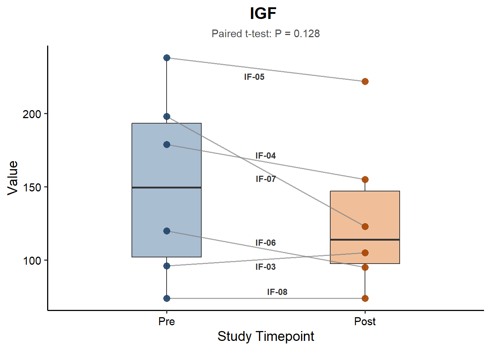
$`IGF-Z `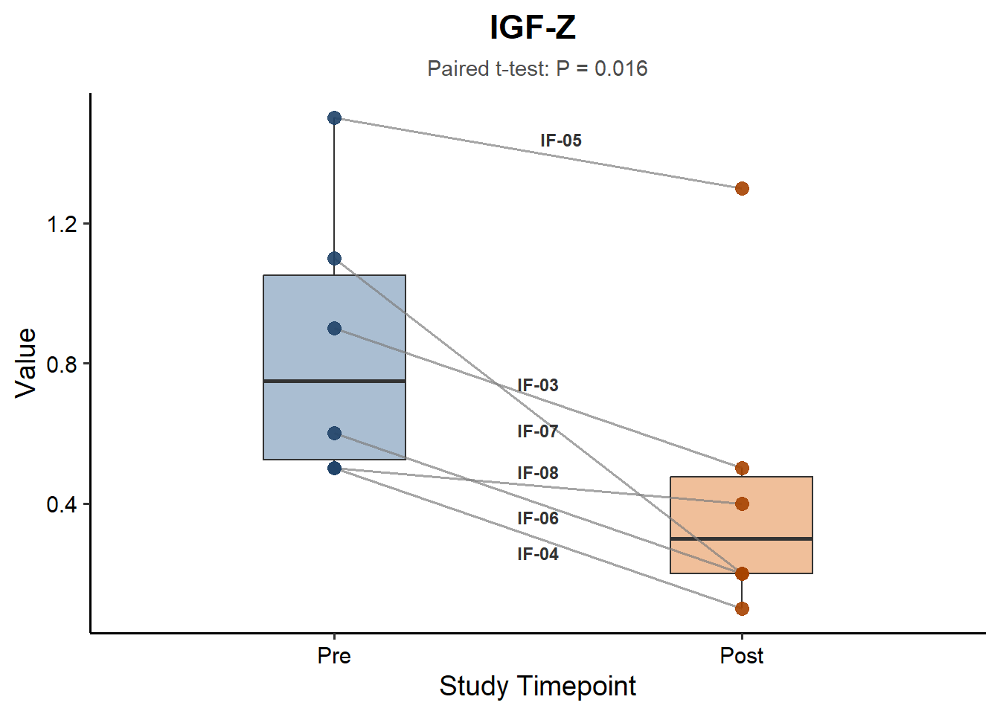
$`Glucose `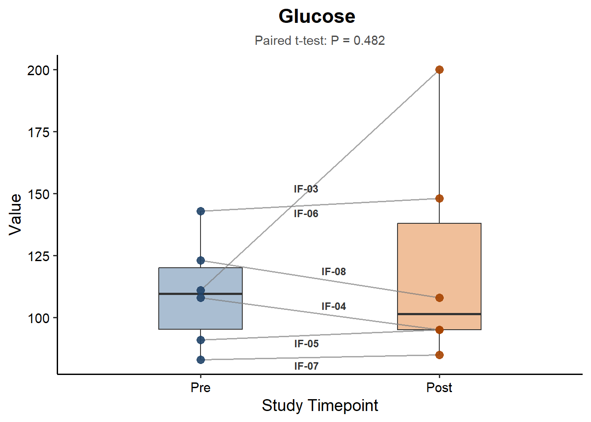
$`CRP `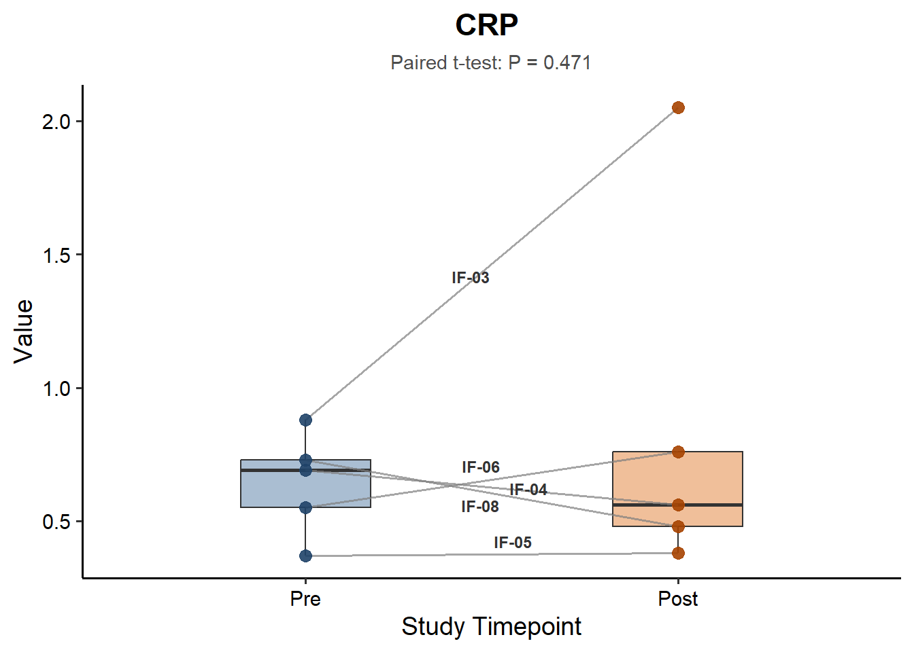
$`ADIPNONECTIN `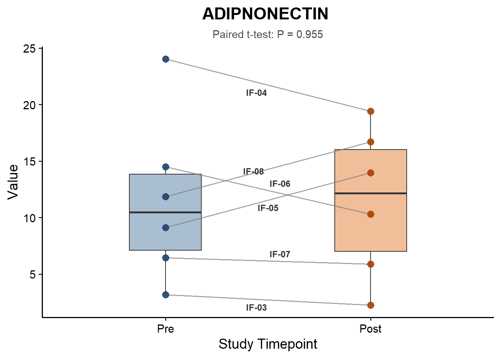
$`Insulin `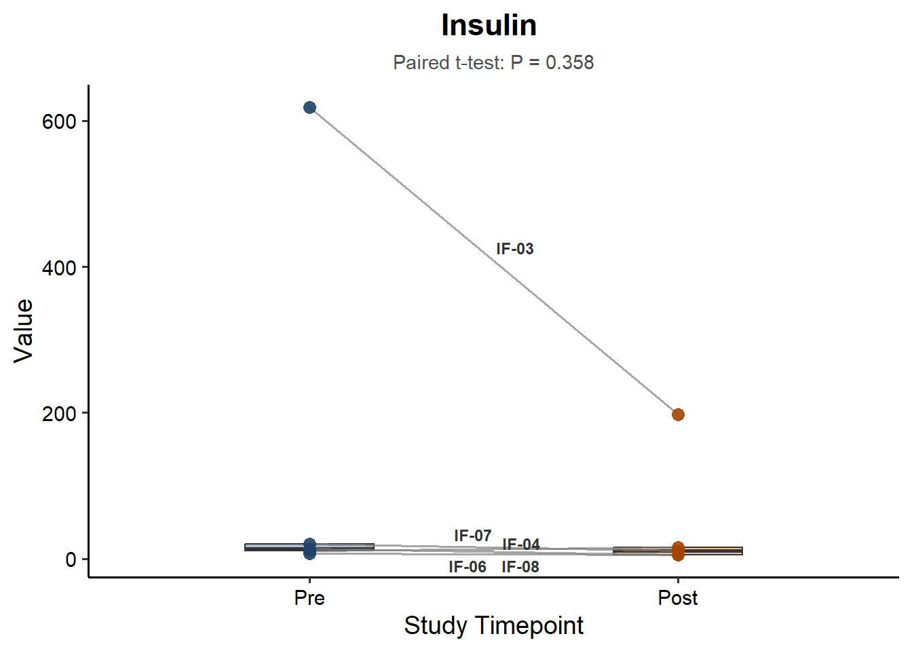
$`HbA1C `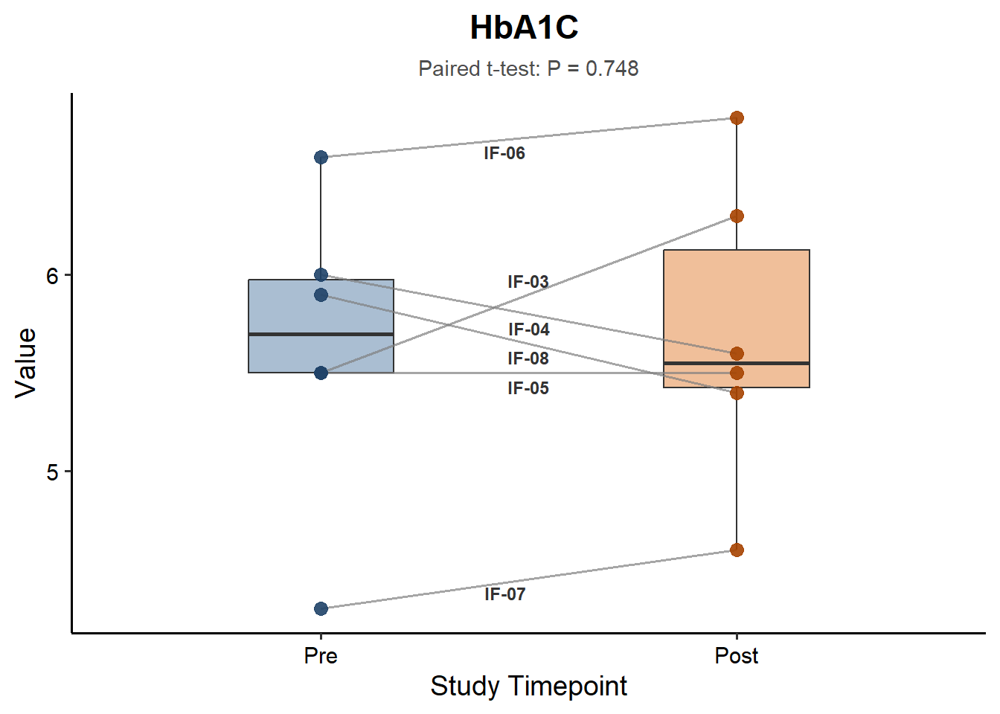
$`Trg `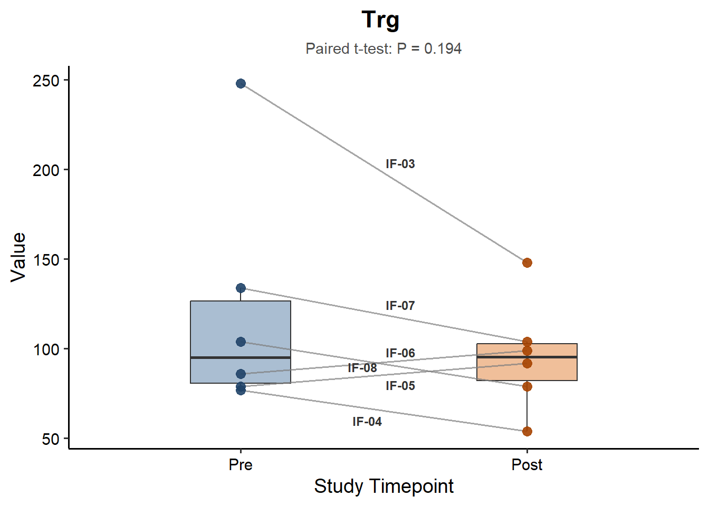
$`HDL `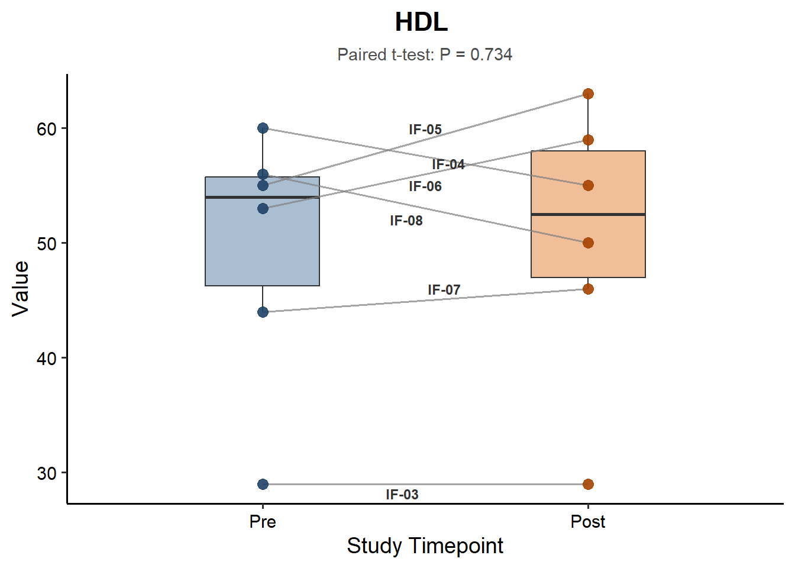
$`LDL `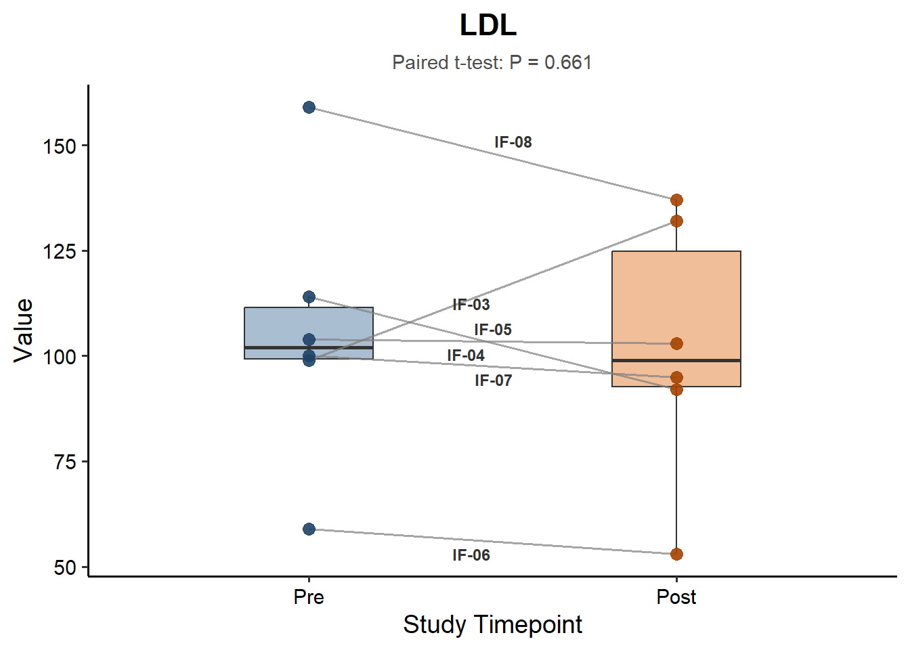
$`Chol/HDL `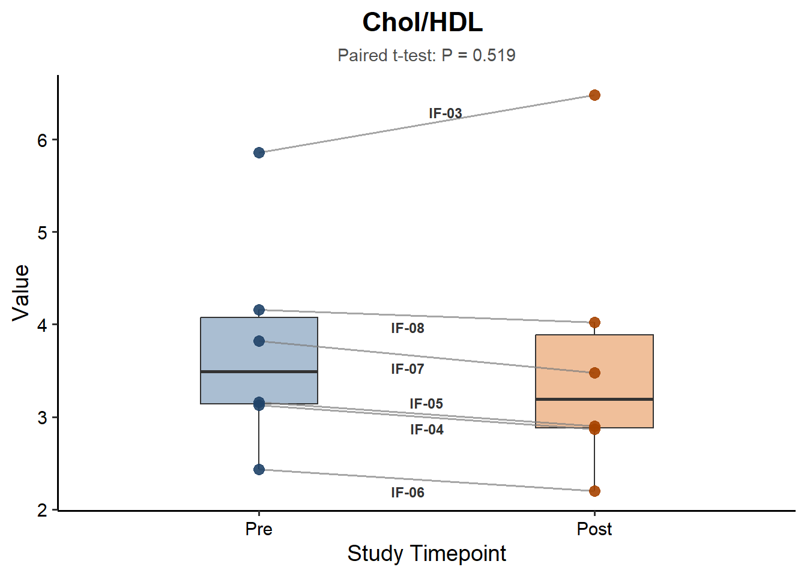
sessionInfo()R version 4.4.0 (2024-04-24 ucrt)
Platform: x86_64-w64-mingw32/x64
Running under: Windows 11 x64 (build 26200)
Matrix products: default
locale:
[1] LC_COLLATE=English_United States.utf8
[2] LC_CTYPE=English_United States.utf8
[3] LC_MONETARY=English_United States.utf8
[4] LC_NUMERIC=C
[5] LC_TIME=English_United States.utf8
time zone: America/Chicago
tzcode source: internal
attached base packages:
[1] stats graphics grDevices utils datasets methods base
other attached packages:
[1] ggrepel_0.9.5 ggplot2_3.5.1 readxl_1.4.3 DT_0.33
[5] tidyr_1.3.1 purrr_1.0.2 dplyr_1.1.4 rprojroot_2.0.4
loaded via a namespace (and not attached):
[1] sass_0.4.9 utf8_1.2.4 generics_0.1.3 stringi_1.8.4
[5] digest_0.6.35 magrittr_2.0.3 evaluate_0.23 grid_4.4.0
[9] fastmap_1.1.1 cellranger_1.1.0 workflowr_1.7.1 jsonlite_1.8.8
[13] whisker_0.4.1 promises_1.3.0 fansi_1.0.6 crosstalk_1.2.1
[17] scales_1.3.0 jquerylib_0.1.4 cli_3.6.2 rlang_1.1.3
[21] munsell_0.5.1 withr_3.0.0 cachem_1.0.8 yaml_2.3.8
[25] tools_4.4.0 colorspace_2.1-0 httpuv_1.6.15 vctrs_0.6.5
[29] R6_2.5.1 lifecycle_1.0.4 git2r_0.33.0 stringr_1.5.1
[33] fs_1.6.4 htmlwidgets_1.6.4 pkgconfig_2.0.3 pillar_1.9.0
[37] bslib_0.7.0 later_1.3.2 gtable_0.3.5 glue_1.7.0
[41] Rcpp_1.0.12 highr_0.10 xfun_0.43 tibble_3.2.1
[45] tidyselect_1.2.1 rstudioapi_0.16.0 knitr_1.46 farver_2.1.2
[49] htmltools_0.5.8.1 labeling_0.4.3 rmarkdown_2.26 compiler_4.4.0